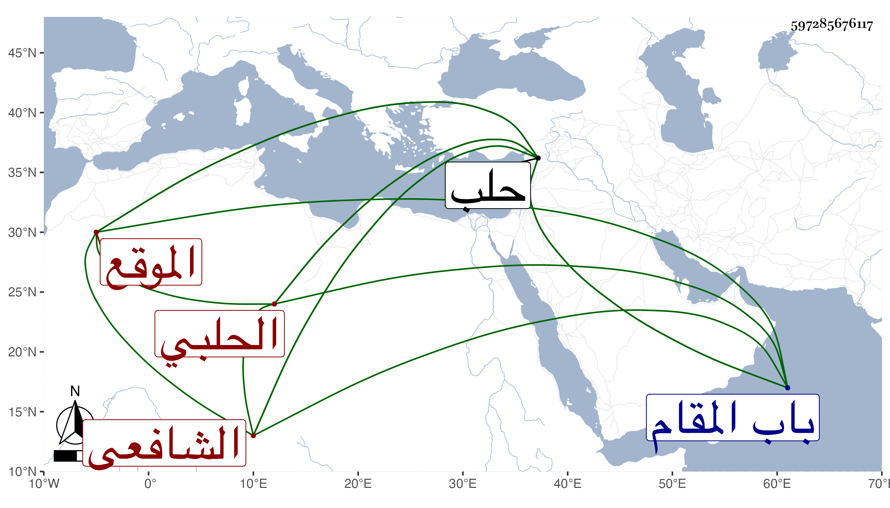

0902Sakhawi.DawLamic.ITO20230111-ara1.EIS1600.597285676117
Biography ID: 597285676117
168
أحمد بن عمر بن يوسف بن علي بن عبد العزيز الشهاب بن الزين الحلبي الشافعي الموقع والد النجم عمر والمحب محمد الآتيين وكان يعرف قديما بابن كاتب الخزانة . ولد في خامس شعبان سنة ثلاث وسبعين وسبعمائة بحلب ولازم العز الحاضري حتى قرأ عليه التوضيح لابن هشام واستمر على العمل فيه حتى صار تام الفضيلة في العربية جدا مع الفضيلة أيضا في المعاني والبيان والعروض ، وسمع على البرهان الحلبي والطبقة ، وأجاز له ابن خلدون والسيد النسابة الكبير وعبد الكريم الحلبى وآخرون، وباشر التوقيع والنقابة عند كاتب السر ببلده سنين بل عين لها وولي كتابة الخزانة ، كل ذلك مع التعبد والقيام والمثابرة على الجماعات والاتصاف بالعقل والرياسة والحشمة والتودد ومراعاة أرباب الدولة والطريقة الحسنة والمحاسن الجمة . أخذ عنه ابن فهد وغيره . مات في ليلة الأربعاء عاشر المحرم سنة أربعين وصلى عليه بالجامع الأعظم ثم صلى عليه بباب دار العدل نائب حلب تغري برمش ودفن بتربته خارج باب المقام . ذكره ابن خطيب الناصرية بأنقص من هذا واصفا له بالفضيلة والدين والعقل والطريقة الحسنة .
